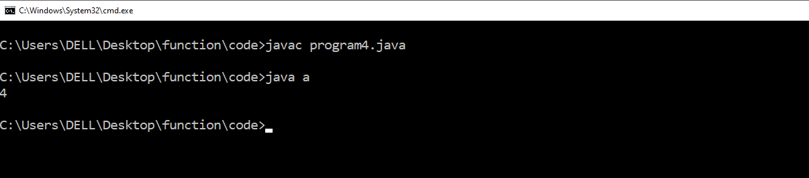
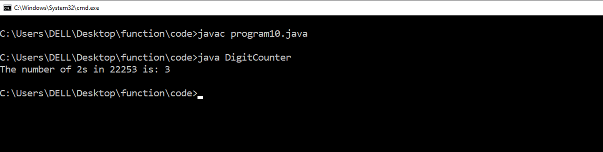

1 :- Write a Java method to find the smallest number among three numbers.
// Write a Java method to find the smallest number among three numbers.
import java.util.Scanner;
class CheckSmallestNumber
{
public static void main(String arg[])
{
smallestNumber();
}
public static void smallestNumber()
{
Scanner s = new Scanner(System.in);
System.out.print("\nEnter a first number :- ");
int a = s.nextInt();
System.out.print("\nEnter a second number :- ");
int b = s.nextInt();
System.out.print("\nEnter a thrid number :- ");
int c = s.nextInt();
if(a< b&&a< c)
{
System.out.println(a+" is smallest number");
}
else if(b< a&&b< c)
{
System.out.println(b+" is smallest number");
}
else
{
System.out.println(c+"is smallest number");
}
}
}
Output :-

2 :- Write a Java method to compute the average of three numbers.
class AverageCalculator {
static double computeAverage(double num1, double num2, double num3) {
return (num1 + num2 + num3) / 3.0;
}
public static void main(String[] args) {
double number1 = 10.0;
double number2 = 5.0;
double number3 = 8.0;
double average = computeAverage(number1, number2, number3);
System.out.println("The average is: " + average);
}
}
Output :-

3 :- Write a Java method to display the middle character of a string. Note: a) If the length of the string is odd there will be two middle characters. b) If the length of the string is even there will be one middle character.
// Write a Java method to display the middle character of a string. Note: a) If the length of the
string is odd there will be two middle characters. b) If the length of the string is even there will be
one middle character.
class MiddleCharacter
{
public static void main(String arg[])
{
middleCharacter();
}
public static void middleCharacter()
{
String s = new String("pripnce");
System.out.println("Original String : "+s);
int n = s.length();
if(n%2 == 0)
{
System.out.println(s.substring(n/2, (n+2)/2));
System.out.println(s.substring((n-1)/2, n/2));
}
else
{
System.out.println(s.substring(n/2, (n+1)/2));
}
}
}
Output :-

4 :- Write a Java method to count all the words in a string.
/*Write a java method to count all the words in a string.*/
class a
{
static int countWord(String s)
{
int t=1;
for(int i=0; i< s.length(); i++)
{
if((s.charAt(i) == ' ') && (s.charAt(i+1) != ' '))
{
t++;
}
}
return t;
}
public static void main(String args[])
{
System.out.println(countWord("Hello How are you"));
}
}
Output :-

5 :- Write a Java method to compute the future investment value at a given interest rate for a specified number of years.
import java.util.*;
class A
{
void display()
{
Scanner sc = new Scanner(System.in);
System.out.print("Enter present value: ");
double p=sc.nextInt();
System.out.print("Enter the interest rate: ");
double r=sc.nextInt();
System.out.print("Enter the time period in years: ");
double y=sc.nextInt();
double f=p*Math.pow((1+r/100),y);
System.out.print("value is: "+f);
}
public static void main(String a[])
{
A obj = new A();
obj.display();
}
}
Output :-

6 :- Write a Java method to print characters between two characters (i.e. A to P).
class A{
void show()
{
char c;
for(c='A'; c <= 'P'; ++c)
{
System.out.print(c + " ");
}
}
public static void main (String a[])
{
A obj = new A();
obj.show();
}
}
Output :-

7 :- Write a Java method to check whether a string is a valid password.
//Program name : Write a Java method to check whether a string is a valid password.
class Func
{
static String validatingPassword(String s) {
int cap = 0, smLetter = 0, digit = 0;
int len = 0;
for (int i = 0; i < s.length(); i++) {
len++;
char c = s.charAt(i);
if (c > 46 && c < 58) {
digit++;
}
if (c > 64 && c < 91) {
cap++;
}
if (c > 96 && c < 123) {
smLetter++;
}
}
String result = "";
if (cap < 2) {
result += "Password should contain at least two capital letters.";
}
if (digit < 2) {
result += "\nPassword should contain at least 1 digit ...";
}
if (len < 8) {
result += "\nPassword should be minimum 8 characters";
}
if (cap >= 2 && digit >= 2 && len >= 8) {
result+="Password is valid...";
}
else{
result+="\nPassword is not valid...";
}
return result;
}
public static void main(String[] args) {
String s = "HHellolodev45";
System.out.println(validatingPassword(s));
}
}
Output :-

8 :- Write a Java method to display the current date and time.
import java.util.Date;
class Test
{
static void apnaTimeAgya(Boolean check)
{
if (check)
{
Date d = new Date();
System.out.println(" hero time "+d);
}
else
{
System.out.println("ja me nahi btata");
}
}
public static void main(String args[])
{
Test t = new Test();
t.apnaTimeAgya(false);
t.apnaTimeAgya(true);
}
}
Output :-

9 :- Write a Java method to find all twin prime numbers less than 100.
class twinprime
{
public static void main(String[] a) {
int limit = 100;
System.out.println("Unique Twin Prime Numbers less than " + limit + ":");
for (int number = 3; number < limit; number += 2) {
if (isTwinPrime(number)) {
System.out.println(number + " and " + (number + 2));
number += 2;
}
}
}
public static boolean isPrime(int num) {
if (num <= 1) {
return false;
}
if (num <= 3) {
return true;
}
if (num % 2 == 0 || num % 3 == 0) {
return false;
}
int sqrtNum = (int) Math.sqrt(num);
for (int i = 5; i <= sqrtNum; i += 6) {
if (num % i == 0 || num % (i + 2) == 0) {
return false;
}
}
return true;
}
public static boolean isTwinPrime(int num) {
return isPrime(num) && (isPrime(num + 2) || isPrime(num - 2));
}
}
Output :-

10 :- Write a Java method to count the number of digits in an integer with the value 2. The integer may be assumed to be non-negative.
class DigitCounter
{
public static int countTwos(int number) {
String numberStr = String.valueOf(number);
int count = 0;
for (int i = 0; i < numberStr.length(); i++) {
if (numberStr.charAt(i) == '2') {
count++;
}
}
return count;
}
public static void main(String[] args) {
int number = 22253;
int numberOfTwos = countTwos(number);
System.out.println("The number of 2s in " + number + " is: " + numberOfTwos);
}
}
Output :-

11 :- Write a Java method that accepts three integers and checks whether they are consecutive or not. Returns true or false.
class ConsecutiveChecker
{
public static boolean areConsecutive(int num1, int num2, int num3){
return (num2 == num1 + 1 && num3 == num2 + 1) || // num1, num2, num3
(num1 == num2 + 1 && num2 == num3 + 1); // num3, num2, num1
}
public static void main(String[] args) {
System.out.println("To check if numbers are consecutive or not ");
System.out.println("Numbers are 5 ,6 ,7 ");
System.out.println(areConsecutive(5, 6, 7));
System.out.println("Numbers are 1 ,2 ,4 ");
System.out.println(areConsecutive(1, 2, 4));
}
}
Output :-
12 :- Write a Java method that accepts three integers and returns true if one is the middle point between the other two integers, otherwise false
import java.util.Scanner;
class Char
{
public static void main(String[ ] arg)
{
int i=0;
Scanner sc=new Scanner(System.in);
System.out.println("Enter a character : ");
char ch=sc.next( ).charAt(0);
if(ch=='a'||ch=='e'||ch=='i'||ch=='o'||ch=='u'||ch=='A'||ch=='E'||ch=='I'||ch=='O'||ch=='U')
{
System.out.println("Entered character "+ch+" is Vowel");
}
else if((ch>='a'&&ch<='z')||(ch>='A'&&ch<='Z'))
System.out.println("Entered character "+ch+" is Consonant");
else
System.out.println("Not an alphabet");
}
}
Output :-
13 :- Write a Java method that checks whether all the characters in a given string are vowels (a, e,i,o,u) or not. Return true if each character in the string is a vowel, otherwise return false.
import java.util.Scanner;
class Char
{
public static void main(String[ ] arg)
{
int i=0;
Scanner sc=new Scanner(System.in);
System.out.println("Enter a character : ");
char ch=sc.next( ).charAt(0);
if(ch=='a'||ch=='e'||ch=='i'||ch=='o'||ch=='u'||ch=='A'||ch=='E'||ch=='I'||ch=='O'||ch=='U')
{
System.out.println("Entered character "+ch+" is Vowel");
}
else if((ch>='a'&&ch<='z')||(ch>='A'&&ch<='Z'))
System.out.println("Entered character "+ch+" is Consonant");
else
System.out.println("Not an alphabet");
}
}
Output :-